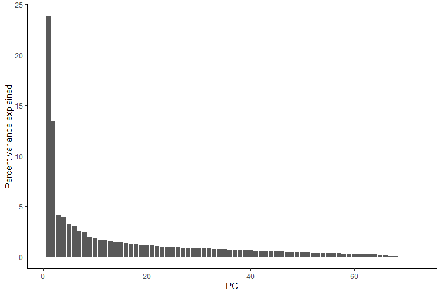
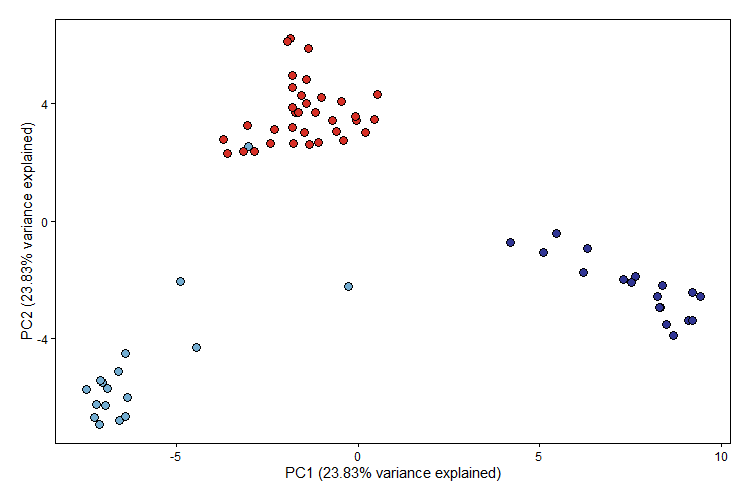

Principal component analysis in PopGenHelpR
Source:vignettes/articles/PopGenHelpR_PCA.Rmd
PopGenHelpR_PCA.RmdOverview
Principal component analysis (PCA) is a widely used technique to identify patterns of genetic structure in genomic data or any data really. PCA is commonly paired with structure-like analyses since PCA is model-free, meaning that it is not based on any biological model (see Patterson et al., 2006 for a discussion on model vs model-free approaches).
We will perform PCA and visualize the results. Note that
we use ggplot2 to visualize the results, not
PopGenHelpR.
Performing a PCA in PopGenHelpR
Running a PCA in PopGenHelpR is straightforward and only
requires the genetic data. One caveat is that the data must be complete,
meaning that there is no missing data. This means that you will have to
impute most genomic data sets, or perform stringent filtering; I usually
use LEA to impute my data (Frichot et al., 2015).
HL_pca <- PCA(HornedLizard_VCF)Our HL_pca object is a list with two elements. First, we
have the loadings of each individual (sample) on the principal
components. Second, we have the percent variance explained by each
principal component (PC). We expect that the first few PCs will explain
the majority of the variance, and most researchers generate PCA scatter
plots using the first few PCs.
Visualizng the PCA results
Let’s see how much variance is explained by the first 10 PCs.
Var_exp <- as.data.frame(t(HL_pca$`Variance Explained`))
Var_exp$PC <- seq(1:nrow(Var_exp))
## Plot the percent variance explained
ggplot(Var_exp, aes(x = PC, y = `Percent variance explained`)) + geom_bar(stat = "identity") + theme_classic() 
We see that the first two principal components account for the majority of the variance, so we will generate a pca scatter plot using those axes. We will color the points according to which population/genetic cluster they belong to. This is commonly done to see if both model-free (e.g., PCA) and model-based (e.g., sNMF) analyses agree.
This will also require additional information (a population assignment file) to color the points.
# Get the population information
Pop <- HornedLizard_Pop
# Check to see if the PCA individuals and Pop indivudals are ordered in the same way, we expect it to be TRUE
rownames(Dat_loadings) == Pop$Sample
# Isolate loadings for the first 2 PCs
Scores_toplot <- as.data.frame(Dat_loadings[,1:2])
Scores_toplot$group <- Pop$Population
# Set colors for each group
Scores_toplot$group[Scores_toplot$group == 'South'] <- "#d73027"
Scores_toplot$group[Scores_toplot$group == 'East'] <- "#74add1"
Scores_toplot$group[Scores_toplot$group == 'West'] <- "#313695"
# Create a custom theme
theme<-theme(panel.background = element_blank(),panel.border=element_rect(fill=NA),
panel.grid.major = element_blank(),panel.grid.minor = element_blank(),
strip.background=element_blank(),axis.text.x=element_text(colour="black"),
axis.text.y=element_text(colour="black"),axis.ticks=element_line(colour="black"),
plot.margin=unit(c(1,1,1,1),"line"))
# Plot and include the variance explained by the axes wer are plotting
ggplot(Scores_toplot, aes(x = PC1, y = PC2)) +
geom_point(shape = 21, color = "black", fill = Scores_toplot$group, size = 3) +
scale_shape_identity() + theme + ylab(paste("PC2 (", round(Dat_pc_var[2,1],2),"% variance explained)", sep = "")) + xlab(paste("PC1 (", round(Dat_pc_var[1,1],2),"% variance explained)", sep = ""))
We see that there are 3 main clusters in our PCA and that the individuals largely cluster by the population/genetic cluster that was assigned by sNMF, with the exception of sample E_71_7760.
Questions???
Please email Keaka Farleigh (farleik@miamioh.edu) if you need help generating a q-matrix or with anything else.
References
- Frichot, E., & François, O. (2015). LEA: An R package for landscape and ecological association studies. Methods in Ecology and Evolution, 6(8), 925-929. https://doi.org/10.1111/2041-210X.12382
- Patterson, N., Price, A. L., & Reich, D. (2006). Population structure and eigenanalysis. PLoS genetics, 2(12), e190. https://doi.org/10.1371/journal.pgen.0020190